强化学习 – Sergey Levine Course
Table of Contents
Optimal Control and Planning
Model-based 强化学习简介
先学习状态转移函数（Transition Dynamics），然后再学习在每个状态下如何选择动作。
Stochastic 优化方法
目标
确定性（Deterministic）环境下：
当状态和动作确定时，下一状态也是确定的。即下一状态是由当前状态和动作相关的函数所确定的。 在已知状态转移方程的情况下，Agent 可以依据模型生成一系列的动作。
\[ \mathbf{a}_{1}, \ldots, \mathbf{a}_{T}=\arg \max _{\mathbf{a}_{1}, \ldots, \mathbf{a}_{T}} \sum_{t=1}^{T} r\left(\mathbf{s}_{t}, \mathbf{a}_{t}\right) \text { s.t. } \mathbf{a}_{t+1}=f\left(\mathbf{s}_{t}, \mathbf{a}_{t}\right) \]
随机性（Stochastic）Open-loop 环境下：
当状态和动作确定时，下一状态无法确定，但有一定的分布概率。 在已知状态转移方程的条件下，Agent 依据模型生成一系列的动作。
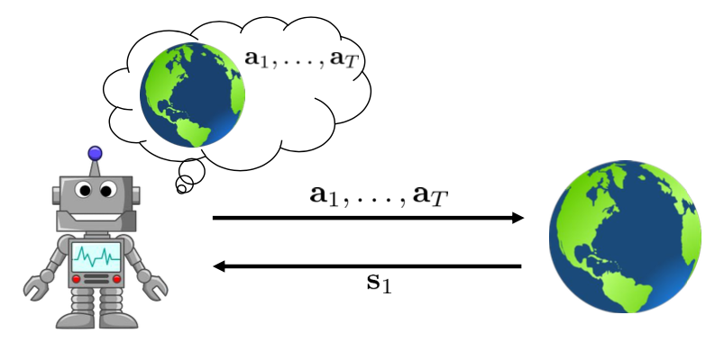
但其实这种设定是不合理的。即使你知道状态转移方程，由于环境自身的随机性你还是无法判断下个状态。
随机性（Stochastic）Closed-loop 环境下：
当状态和动作确定时，下一状态无法确定。Agent 可以依据模型生成一个策略，即每走一步，生成一步的动作。
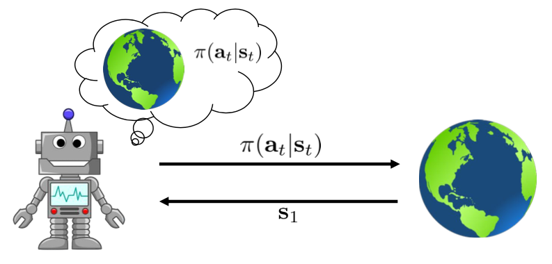
优化
对于 Open-loop 环境下的 Agent，简化一下我们的优化目标： \[ \mathbf{a}_{1}, \ldots, \mathbf{a}_{T}=\arg \max _{\mathbf{a}_{1}, \ldots, \mathbf{a}_{T}} J\left(\mathbf{a}_{1}, \ldots, \mathbf{a}_{T}\right) \] 即： \[ \mathbf{A}=\arg \max _{\mathbf{A}} J(\mathbf{A}) \]
Guess & Check (random shooting)
- 随便找一个分布函数（distribution），使用此分布函数选择不同状态的动作序列 \(A_1,\dots,A_N\)
- 根据上诉公式选取使得 \(J(A_i)\) 最大的动作序列 \(A_i\)
Cross-entropy method（CEM）
交叉熵方法一般适用于状态空间连续的环境，分布函数一般选择高斯分布。
- 使用高斯分布 \(p(A)\) 生成动作序列 \(A_1,\dots,A_N\)
- 计算 \(J(A_1),\dots,J(A_N)\)
- 选取上诉计算结果中表现最好（\(J(A_i)\) 值最高）的几组动作序列 \(A_{i_1},\dots,A_{i_M}\) ，其中 \(M
- 修改高斯分布参数，使得此高斯分布更加贴合 \(A_{i_1},\dots,A_{i_M}\) ，返回 1 步继续执行
Monte Carlo 树搜索 （MCTS）
MCTS 适用于离散动作空间和连续动作空间，这里以离散动作空间举例。
初始状态为 \(s_1\) ，如果遍历了所有从 \(s_1\) 出发的路径，那么自然可以选出哪条路径是最佳路径。 这样做的缺陷是遍历空间太大，而且浪费时间。 我们需要选择那些有较高奖励（这个目的很明显）的状态，同时也会选经过很少次的状态（经过很少，说明对这个状态探索很少）。具体算法如下： MCTS:
- 使用
TreePolicy(s_1)得到一个叶子节点（新状态）\(s_l\) - 使用
DefaultPolicy(s_l)计算叶子节点的得分（Q 值） - 更新从 \(s_1\) 到 \(s_l\) 之间的所有 Q 值，从
s_1选取最佳动作
TreePolicy(\(s_t\)): 如果 \(s_t\) 没有完全被探索，那么就选取新动作 \(a_t\) ；否则选取具有最优 Q 值的动作。
\[ \operatorname{Q}\left(s_{t}\right)=\frac{Q\left(s_{t}\right)}{N\left(s_{t}\right)}+2 C \sqrt{\frac{2 \ln N\left(s_{t-1}\right)}{N\left(s_{t}\right)}} \]
导数求解
一般来说，强化学习很少有问题可以使用导数来求解，因为我们无法知道它的状态转移方程（环境动力学函数）， 比如在玩 Atari 游戏的时候，下一状态我们是无法通过公式定义来得到的。 假设我们现在知道状态转移方程，那么要如何通过导数来求得最优解呢？
先来考虑一下确定性环境。我们的目标是： \[ \min _{\mathbf{u}_{1}, \ldots, \mathbf{u}_{T}} \sum_{t=1}^{T} c\left(\mathbf{x}_{t}, \mathbf{u}_{t}\right) \text { s.t. } \mathbf{x}_{t}=f\left(\mathbf{x}_{t-1}, \mathbf{u}_{t-1}\right) \]
这是一个约束问题，我们可以把它转换为非约束问题： \[ \min _{\mathbf{u}_{1}, \ldots, \mathbf{u}_{T}} c\left(\mathbf{x}_{1}, \mathbf{u}_{1}\right)+c\left(f\left(\mathbf{x}_{1}, \mathbf{u}_{1}\right), \mathbf{u}_{2}\right)+\cdots+c\left(f(f(\ldots) \ldots), \mathbf{u}_{T}\right) \]
对于非约束最优化问题，我们可以求导，使用梯度下降相关的方法来解决，需要计算 \[ \frac{d f}{d \mathbf{x}_{t}}, \frac{d f}{d \mathbf{u}_{t}}, \frac{d c}{d \mathbf{x}_{t}}, \frac{d c}{d \mathbf{u}_{t}} \]
Shooting method
前面提到的一阶优化方法被称作 Shooting method 。它只对动作进行求导，状态是关于动作的函数。
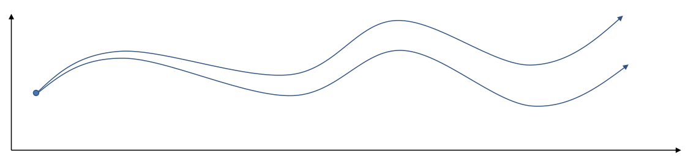
上图横轴是时间，纵轴是状态。给定初始位置之后，选择动作，根据状态转移方程得到下一个状态，直到结束。 可以看到，如果开始的动作发生一个细微的变化，也会对最后的结果造成很大的影响。
Collocation method
Collocation method 对状态和动作求导，有约束性。
\[
\min _{\mathbf{u}_{1}, \ldots, \mathbf{u}_{T}, \mathbf{x}_{1}, \ldots, \mathbf{x}_{T}} \sum_{t=1}^{T} c\left(\mathbf{x}_{t}, \mathbf{u}_{t}\right) \text { s.t. } \mathbf{x}_{t}=f\left(\mathbf{x}_{t-1}, \mathbf{u}_{t-1}\right)
\]
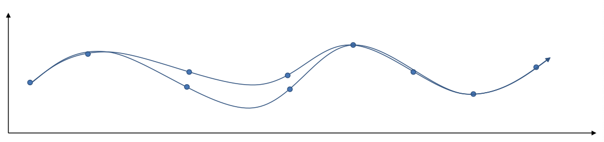
LQR
我们先使用 Shooting method 求解。
目标是：
\[
\min _{\mathbf{u}_{1}, \ldots, \mathbf{u}_{T}} c\left(\mathbf{x}_{1}, \mathbf{u}_{1}\right)+c\left(f\left(\mathbf{x}_{1}, \mathbf{u}_{1}\right), \mathbf{u}_{2}\right)+\cdots+c\left(f(f(\ldots) \ldots), \mathbf{u}_{T}\right)
\]
其中： \[ f\left(\mathbf{x}_{t}, \mathbf{u}_{t}\right)=\mathbf{F}_{t}\left[\begin{array}{c} \mathbf{x}_{t} \\ \mathbf{u}_{t} \end{array}\right]+\mathbf{f}_{t} \] ，线性函数，\(F\) 为环境动力学相关的函数； \[ c\left(\mathbf{x}_{t}, \mathbf{u}_{t}\right)=\frac{1}{2}\left[\begin{array}{c} \mathbf{x}_{t} \\ \mathbf{u}_{t} \end{array}\right]^{T} \mathbf{C}_{t}\left[\begin{array}{c} \mathbf{x}_{t} \\ \mathbf{u}_{t} \end{array}\right]+\left[\begin{array}{c} \mathbf{x}_{t} \\ \mathbf{u}_{t} \end{array}\right]^{T} \mathbf{c}_{t} \] ，二次函数，\(C\) 为任意维度匹配的矩阵。
目标方程只对动作 \(u_t\) 求导，且上一时刻的状态和动作会影响下一时刻的状态 （\(x_t=f(x_{t-1},u_{t-1})\)），进而影响下一时刻的损失 c 。
因此，我们需要使用反向传播的方法，把梯度从最后一个状态开始，传回第一个状态。
因此先计算对 \(u_T\) 的求导：
最后一步执行后的损失为：（因为损失与状态和动作相关，所以使用 Q 来表示）
\[
Q\left(\mathbf{x}_{T}, \mathbf{u}_{T}\right)=\text { const }+\frac{1}{2}\left[\begin{array}{c}
\mathbf{x}_{T} \\
\mathbf{u}_{T}
\end{array}\right]^{T} \mathbf{C}_{T}\left[\begin{array}{c}
\mathbf{x}_{T} \\
\mathbf{u}_{T}
\end{array}\right]+\left[\begin{array}{c}
\mathbf{x}_{T} \\
\mathbf{u}_{T}
\end{array}\right]^{T} \mathbf{c}_{T}
\]
设：
\[
\mathbf{C}_{T}=\left[\begin{array}{cc}
\mathbf{C}_{\mathbf{x}_{T}, \mathbf{x}_{T}} & \mathbf{C}_{\mathbf{x}_{T}, \mathbf{u}_{T}} \\
\mathbf{C}_{\mathbf{u}_{T}, \mathbf{x}_{T}} & \mathbf{C}_{\mathbf{u}_{T}, \mathbf{u}_{T}}
\end{array}\right]
\]
\[
\mathbf{c}_{T}=\left[\begin{array}{l}
\mathbf{c}_{\mathbf{x}_{T}} \\
\mathbf{c}_{\mathbf{u}_{T}}
\end{array}\right]
\]
对 \(u_T\) 求导：
\begin{array}{c} \nabla_{\mathbf{u}_{T}} Q\left(\mathbf{x}_{T}, \mathbf{u}_{T}\right)=\mathbf{C}_{\mathbf{u}_{T}, \mathbf{x}_{T}} \mathbf{x}_{T}+\mathbf{C}_{\mathbf{u}_{T}, \mathbf{u}_{T}} \mathbf{u}_{T}+\mathbf{c}_{\mathbf{u}_{T}}^{T}=0 \\ \mathbf{u}_{T}=-\mathbf{C}_{\mathbf{u}_{T}, \mathbf{u}_{T}}^{-1}\left(\mathbf{C}_{\mathbf{u}_{T}, \mathbf{x}_{T}} \mathbf{x}_{T}+\mathbf{c}_{\mathbf{u}_{T}}\right) \end{array}化简：
\begin{array}{l} \mathbf{u}_{T}=\mathbf{K}_{T} \mathbf{x}_{T}+\mathbf{k}_{T} \\ \mathbf{K}_{T}=-\mathbf{C}_{\mathbf{u}_{T}, \mathbf{u}_{T}}^{-1} \mathbf{C}_{\mathbf{u}_{T}, \mathbf{x}_{T}} \\ \mathbf{k}_{T}=-\mathbf{C}_{\mathbf{u}_{T}, \mathbf{u}_{T}}^{-1} \mathbf{c}_{\mathbf{u}_{T}} \end{array}可以看到，动作可以由状态来确定，因此损失可以只用状态来表示（V）： \[ V\left(\mathbf{x}_{T}\right)=\operatorname{const}+\frac{1}{2}\left[\begin{array}{c} \mathbf{x}_{T} \\ \mathbf{K}_{T} \mathbf{x}_{T}+\mathbf{k}_{T} \end{array}\right]^{T} \mathbf{C}_{T}\left[\begin{array}{c} \mathbf{x}_{T} \\ \mathbf{K}_{T} \mathbf{x}_{T}+\mathbf{k}_{T} \end{array}\right]+\left[\begin{array}{c} \mathbf{x}_{T} \\ \mathbf{K}_{T} \mathbf{x}_{T}+\mathbf{k}_{T} \end{array}\right]^{T} \mathbf{c}_{T} \]
展开：
\begin{aligned} V\left(\mathbf{x}_{T}\right)=& \frac{1}{2} \mathbf{x}_{T}^{T} \mathbf{C}_{\mathbf{x}_{T}, \mathbf{x}_{T}} \mathbf{x}_{T}+\frac{1}{2} \mathbf{x}_{T}^{T} \mathbf{C}_{\mathbf{x}_{T}, \mathbf{u}_{T}} \mathbf{K}_{T} \mathbf{x}_{T}+\frac{1}{2} \mathbf{x}_{T}^{T} \mathbf{K}_{T}^{T} \mathbf{C}_{\mathbf{u}_{T}, \mathbf{x}_{T}} \mathbf{x}_{T}+\frac{1}{2} \mathbf{x}_{T}^{T} \mathbf{K}_{T}^{T} \mathbf{C}_{\mathbf{u}_{T}, \mathbf{u}_{T}} \mathbf{K}_{T} \mathbf{x}_{T}+\\ & \mathbf{x}_{T}^{T} \mathbf{K}_{T}^{T} \mathbf{C}_{\mathbf{u}_{T}, \mathbf{u}_{T}} \mathbf{k}_{T}+\frac{1}{2} \mathbf{x}_{T}^{T} \mathbf{C}_{\mathbf{x}_{T}, \mathbf{u}_{T}} \mathbf{k}_{T}+\mathbf{x}_{T}^{T} \mathbf{c}_{\mathbf{x}_{T}}+\mathbf{x}_{T}^{T} \mathbf{K}_{T}^{T} \mathbf{c}_{\mathbf{u}_{T}}+\mathrm{const} \end{aligned}化简：
\begin{array}{l} V\left(\mathbf{x}_{T}\right)=\mathrm{const}+\frac{1}{2} \mathbf{x}_{T}^{T} \mathbf{V}_{T} \mathbf{x}_{T}+\mathbf{x}_{T}^{T} \mathbf{v}_{T} \\ \mathbf{V}_{T}=\mathbf{C}_{\mathbf{x}_{T}, \mathbf{x}_{T}}+\mathbf{C}_{\mathbf{x}_{T}, \mathbf{u}_{T}} \mathbf{K}_{T}+\mathbf{K}_{T}^{T} \mathbf{C}_{\mathbf{u}_{T}, \mathbf{x}_{T}}+\mathbf{K}_{T}^{T} \mathbf{C}_{\mathbf{u}_{T}, \mathbf{u}_{T}} \mathbf{K}_{T} \\ \mathbf{v}_{T}=\mathbf{c}_{\mathbf{x}_{T}}+\mathbf{C}_{\mathbf{x}_{T}, \mathbf{u}_{T}} \mathbf{k}_{T}+\mathbf{K}_{T}^{T} \mathbf{C}_{\mathbf{u}_{T}}+\mathbf{K}_{T}^{T} \mathbf{C}_{\mathbf{u}_{T}, \mathbf{u}_{T}} \mathbf{k}_{T} \end{array}接下来就可以计算目标函数对 \(u_{T-1}\) 的求导了。方法和之前相同，只不过这一步的损失要加上最后一步的损失， 因为这一步的状态和动作会影响下一步的损失。
当前步的损失（Q）： \[ Q\left(\mathbf{x}_{T-1}, \mathbf{u}_{T-1}\right)=\operatorname{const}+\frac{1}{2}\left[\begin{array}{c} \mathbf{x}_{T-1} \\ \mathbf{u}_{T-1} \end{array}\right]^{T} \mathbf{C}_{T-1}\left[\begin{array}{c} \mathbf{x}_{T-1} \\ \mathbf{u}_{T-1} \end{array}\right]+\left[\begin{array}{c} \mathbf{x}_{T-1} \\ \mathbf{u}_{T-1} \end{array}\right]^{T} \mathbf{c}_{T-1}+V\left(f\left(\mathbf{x}_{T-1}, \mathbf{u}_{T-1}\right)\right) \] V: \[ V\left(\mathbf{x}_{T}\right)=\operatorname{const}+\frac{1}{2}\left[\begin{array}{c} \mathbf{x}_{T-1} \\ \mathbf{u}_{T-1} \end{array}\right]^{T} \mathbf{F}_{T-1}^{T} \mathbf{V}_{T} \mathbf{F}_{T-1}\left[\begin{array}{c} \mathbf{x}_{T-1} \\ \mathbf{u}_{T-1} \end{array}\right]+\left[\begin{array}{c} \mathbf{x}_{T-1} \\ \mathbf{u}_{T-1} \end{array}\right]^{T} \mathbf{F}_{T-1}^{T} \mathbf{V}_{T} \mathbf{f}_{T-1}+\left[\begin{array}{c} \mathbf{x}_{T-1} \\ \mathbf{u}_{T-1} \end{array}\right]^{T} \mathbf{F}_{T-1}^{T}\mathbf{v}_{T} \]
合并上诉两项： \[ Q\left(\mathbf{x}_{T-1}, \mathbf{u}_{T-1}\right)=\text { const }+\frac{1}{2}\left[\begin{array}{c} \mathbf{x}_{T-1} \\ \mathbf{u}_{T-1} \end{array}\right]^{T} \mathbf{Q}_{T-1}\left[\begin{array}{c} \mathbf{x}_{T-1} \\ \mathbf{u}_{T-1} \end{array}\right]+\left[\begin{array}{c} \mathbf{x}_{T-1} \\ \mathbf{u}_{T-1} \end{array}\right]^{T} \mathbf{q}_{T-1} \]
其中：
\begin{array}{l} \mathbf{Q}_{T-1}=\mathbf{C}_{T-1}+\mathbf{F}_{T-1}^{T} \mathbf{V}_{T} \mathbf{F}_{T-1} \\ \mathbf{q}_{T-1}=\mathbf{c}_{T-1}+\mathbf{F}_{T-1}^{T} \mathbf{V}_{T} \mathbf{f}_{T-1}+\mathbf{F}_{T-1}^{T} \mathbf{v}_{T} \end{array}计算，令其导数为 0 ， \[ \nabla_{\mathbf{u}_{T-1}} Q\left(\mathbf{x}_{T-1}, \mathbf{u}_{T-1}\right)=\mathbf{Q}_{\mathbf{u}_{T-1}, \mathbf{x}_{T-1}} \mathbf{x}_{T-1}+\mathbf{Q}_{\mathbf{u}_{T-1}, \mathbf{u}_{T-1}} \mathbf{u}_{T-1}+\mathbf{q}_{\mathbf{u}_{T-1}}^{T}=0 \]
得到： \[ \mathbf{u}_{T-1}=\mathbf{K}_{T-1} \mathbf{x}_{T-1}+\mathbf{k}_{T-1} \]
其中：
\begin{array}{l} \mathbf{K}_{T-1}=-\mathbf{Q}_{\mathbf{u}_{T-1}, \mathbf{u}_{T-1}}^{-1} \mathbf{Q}_{\mathbf{u}_{T-1}, \mathbf{x}_{T-1}} \\ \mathbf{k}_{T-1}=-\mathbf{Q}_{\mathbf{u}_{T-1}, \mathbf{u}_{T-1}}^{-1} \mathbf{q}_{\mathbf{u}_{T-1}} \end{array}通过上面的分析，我们可以得到 LQR 算法中反向传播部分的算法：
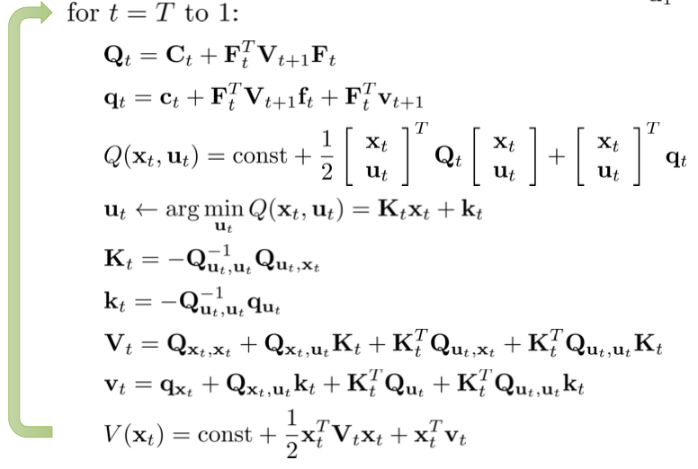
反向传播计算出 k 之后，正向传播就简单了：
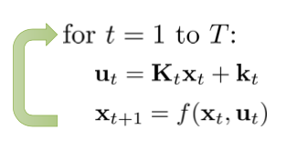
iLQR
LQR 方法适用于状态转移方程为线性的，损失函数为二次的环境中，但实际中很多问题都不满足这个条件。 那么我们用一个线性方程来近似拟合现实问题的非线性环境动力学方程吗？
可以使用泰勒展开来近似。 \[ f\left(\mathbf{x}_{t}, \mathbf{u}_{t}\right) \approx f\left(\hat{\mathbf{x}}_{t}, \hat{\mathbf{u}}_{t}\right)+\nabla_{\mathbf{x}_{t}, \mathbf{u}_{t}} f\left(\hat{\mathbf{x}}_{t}, \hat{\mathbf{u}}_{t}\right)\left[\begin{array}{c} \mathbf{x}_{t}-\hat{\mathbf{x}}_{t} \\ \mathbf{u}_{t}-\hat{\mathbf{u}}_{t} \end{array}\right] \] \[ c\left(\mathbf{x}_{t}, \mathbf{u}_{t}\right) \approx c\left(\hat{\mathbf{x}}_{t}, \hat{\mathbf{u}}_{t}\right)+\nabla_{\mathbf{x}_{t}}, \mathbf{u}_{t} c\left(\hat{\mathbf{x}}_{t}, \hat{\mathbf{u}}_{t}\right)\left[\begin{array}{c} \mathbf{x}_{t}-\hat{\mathbf{x}}_{t} \\ \mathbf{u}_{t}-\hat{\mathbf{u}}_{t} \end{array}\right]+\frac{1}{2}\left[\begin{array}{c} \mathbf{x}_{t}-\hat{\mathbf{x}}_{t} \\ \mathbf{u}_{t}-\hat{\mathbf{u}}_{t} \end{array}\right]^{T} \nabla_{\mathbf{x}_{t}, \mathbf{u}_{t}}^{2} c\left(\hat{\mathbf{x}}_{t}, \hat{\mathbf{u}}_{t}\right)\left[\begin{array}{c} \mathbf{x}_{t}-\hat{\mathbf{x}}_{t} \\ \mathbf{u}_{t}-\hat{\mathbf{u}}_{t} \end{array}\right] \]
移项之后，化简： \[ \bar{f}\left(\delta \mathbf{x}_{t}, \delta \mathbf{u}_{t}\right)=\mathbf{F}_{t}\left[\begin{array}{l} \delta \mathbf{x}_{t} \\ \delta \mathbf{u}_{t} \end{array}\right] \] \[ \bar{c}\left(\delta \mathbf{x}_{t}, \delta \mathbf{u}_{t}\right)=\frac{1}{2}\left[\begin{array}{c} \delta \mathbf{x}_{t} \\ \delta \mathbf{u}_{t} \end{array}\right]^{T} \begin{array}{c} \mathbf{C}_{t}\left[\begin{array}{c} \delta \mathbf{x}_{t} \\ \delta \mathbf{u}_{t} \end{array}\right]+\left[\begin{array}{c} \delta \mathbf{x}_{t} \\ \delta \mathbf{u}_{t} \end{array}\right]^{T} \mathbf{c}_{t} \end{array} \]
其中： \[ \mathbf{F}_t=\nabla_{\mathbf{x}_t,\mathbf{u}_t}f\left(\hat{\mathbf{x}_t},\hat{\mathbf{u}_t}\right) \] \[ \mathbf{C}_t=\nabla^{2}_{\mathbf{x}_t,\mathbf{u}_t}c\left(\hat{\mathbf{x}_t},\hat{\mathbf{u}_t}\right) \] \[ \mathbf{c}_t=\nabla_{\hat{\mathbf{x}_t},\hat{\mathbf{u}_t}}c\left(\hat{\mathbf{x}_t},\hat{\mathbf{u}_t}\right) \] \[ \delta_{\mathbf{x}_t}=\mathbf{x}_t-\hat{\mathbf{x}_t} \] \[ \delta_{\mathbf{u}_t}=\mathbf{u}_t-\hat{\mathbf{u}_t} \]
我们将其转换成了一个 LQR 问题。至此，我们可以得到 iLQR 算法：
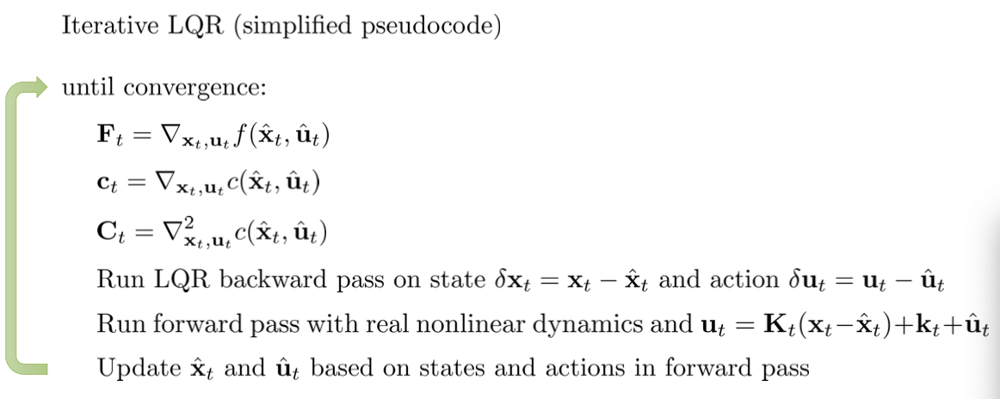
Model-Based Reinforcement Learning
一旦我们知道了环境动力学模型，那么我们就可以使用前面学到的知识进行动作的选择和规划了。 最 Navie 的方法如下：
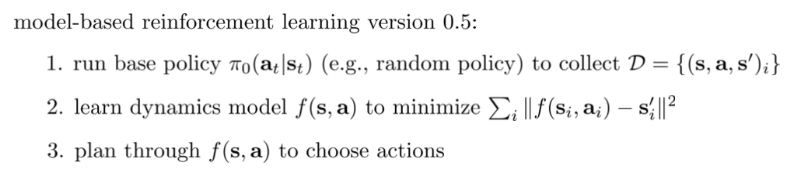
如果有精心设计的初始策略，以及环境动力学函数（dynamics representation），将会大大提高这种方法的成功性。
但这种方法对于训练集（随机策略探索到的数据）中没有的状态，无法作出很好的判断。 如下图所示，假设随机策略探索到的只有红色线条的部分，它据此构建的模型为“越往右得分越高”。 但真正的模型其实是“往右走时，得分先增高然后减小”。由于探索数据中没有很多的信息导致模型的不准确。
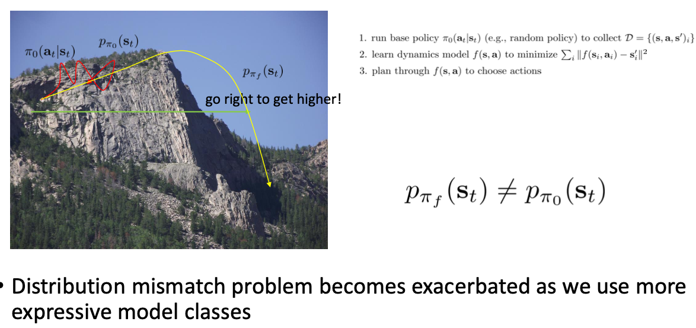
引入 DAgger 算法，通过人工对数据标记，更新模型，来保证模型的准确性。
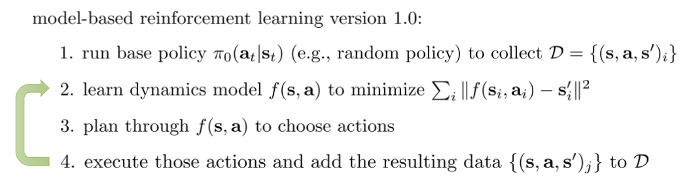
现在还存在一个问题，之前的算法都是通过模型进行整个规划， 是个 open-loop 模型，由于模型存在着误差，规划完整个动作轨迹会导致误差累积很大，使得后面的规划动作质量很差。
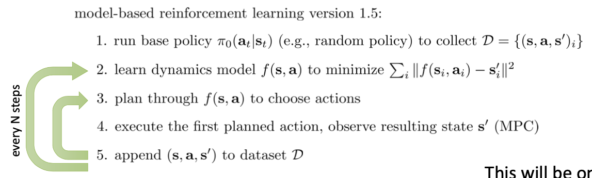
模型的不确定性
训练模型时，很容易就会陷入 overfit 的问题中。如下图所示，
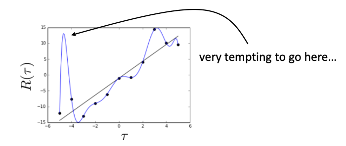
真正的轨迹应该是黑色线条，我们用数据预测出来的模型是蓝色线条。 可以看出来，有些地方的奖励预测过高，导致会在某些地方的选择与正确动作相差巨大。
假设我们有一个关于模型准确率的函数，用来描述模型在当前状态下的预测的准确率。 下图蓝色部分为 95% 的置信区间，它表示，模型有 95% 的概率确定下一个状态会在蓝色区间内， 但模型无法知道到底在蓝色区间内的什么地方。
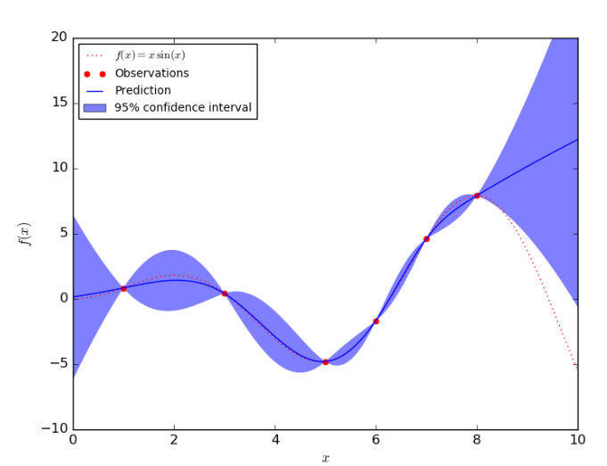
如何计算模型不确定性？
Idea 1. 计算输出动作的交叉熵。熵越高，模型越不稳定。
这种想法是不可行的。下图中蓝线表示生成的模型，可以看出，模型的方差基本上为 0，即模型输出的熵为 0， 但这个模型是非常不稳定的。 “Model is certain about the data, but we are not certain about the model.”
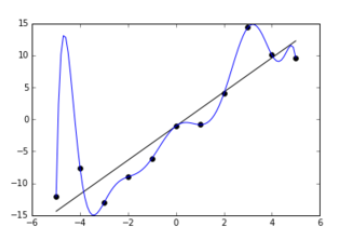
模型的不确定性其实体现在两个方面，一是数据的不确定性，二是模型本身的不确定性。 计算交叉熵解决的只是数据的不确定性。
Idea 2. 计算模型本身的不确定性
我们希望生成的模型可以满足这个条件： \[ \arg\max\log p(\theta|D)=\arg\max\log p(D|\theta) \] 也就是说，模型参数可以通过数据生成，数据也可以使用模型参数来生成。
其实， \(\log p(\theta|D)\) 就是说明模型不确定性的因素，它表示用这些数据生成一参数为 \(\theta\) 的模型的概率是多少。 然后将模型不确定性和数据不确定性结合起来： \[ \int p(s_{t+1}|s_t,a_t,\theta)p(\theta|D)d\theta \]
计算模型不确定性的方法
Bootstrap ensembles 训练多个模型，那么其结果的期望可以近似看作多个模型的均值。 模型在不同参数 \(\theta\) 下的期望为：（ \(\theta\) 的概率由 \(D\) 确定 ） \[ \int p(s_{t+1}|s_t,a_t,\theta)p(\theta|D)d\theta\sim\frac{1}{N}\sum_{i}p(s_{t+1}|s_t,a_t,\theta_i) \] 现在，目标函数就变成了： \[ J\left(\mathbf{a}_{1}, \ldots, \mathbf{a}_{H}\right)=\frac{1}{N} \sum_{i=1}^{N} \sum_{t=1}^{H} r\left(\mathbf{s}_{t, i}, \mathbf{a}_{t}\right), \text { where } \mathbf{s}_{t+1, i}=f_{i}\left(\mathbf{s}_{t, i}, \mathbf{a}_{t}\right) \] 整体算法流程为：
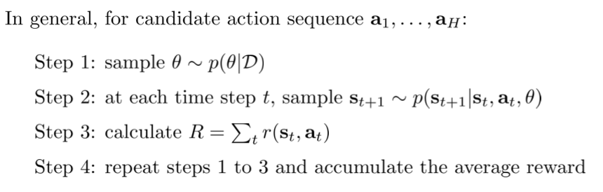
Latent space models
模型学习的好坏还与环境的复杂性有关。有些环境是部分可观测的，状态是高维的且存在较多冗余信息。 这节将考虑如何从结构设计的角度使得模型的学习变得简单容易。 我们需要考虑训练的模型有：
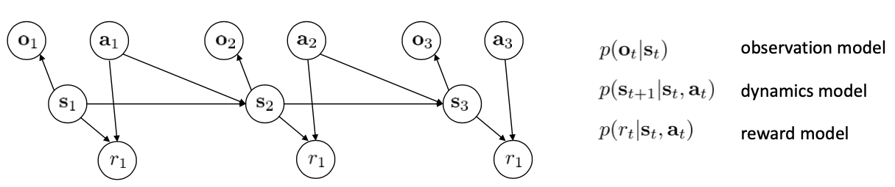
在全部可观测模型中，我们通常做的是对网络的输出做最大似然化： \[ \max _{\phi} \frac{1}{N} \sum_{i=1}^{N} \sum_{t=1}^{T} \log p_{\phi}\left(\mathbf{s}_{t+1, i} \mid \mathbf{s}_{t, i}, \mathbf{a}_{t, i}\right) \] 但现在我们没有 \(s_t\) ，只能对其期望做最大似然化： \[ \text { latent space model: } \max _{\phi} \frac{1}{N} \sum_{i=1}^{N} \sum_{t=1}^{T} E\left[\log p_{\phi}\left(\mathbf{s}_{t+1, i} \mid \mathbf{s}_{t, i}, \mathbf{a}_{t, i}\right)+\log p_{\phi}\left(\mathbf{o}_{t, i} \mid \mathbf{s}_{t, i}\right)\right] \] 其中， \[ \text { expectation w.r.t. }\left(\mathbf{s}_{t}, \mathbf{s}_{t+1}\right) \sim p\left(\mathbf{s}_{t}, \mathbf{s}_{t+1} \mid \mathbf{o}_{1: T}, \mathbf{a}_{1: T}\right) \] 这个分布需要这么复杂吗？
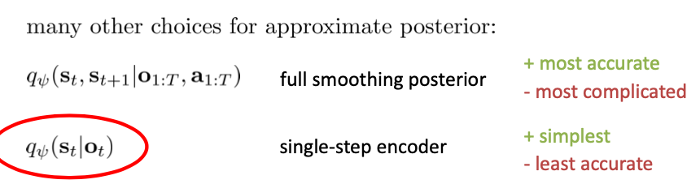
这里我们使用简单的方法，使用： \[ \text { expectation w.r.t. } \mathbf{s}_{t} \sim q_{\psi}\left(\mathbf{s}_{t} \mid \mathbf{o}_{t}\right), \mathbf{s}_{t+1} \sim q_{\psi}\left(\mathbf{s}_{t+1} \mid \mathbf{o}_{t+1}\right) \] 为了简化讨论，这里的 observation model 是确定性的， \[ q_{\psi}\left(\mathbf{s}_{t} \mid \mathbf{o}_{t}\right)=\delta\left(\mathbf{s}_{t}=g_{\psi}\left(\mathbf{o}_{t}\right)\right) \Rightarrow \mathbf{s}_{t}=g_{\psi}\left(\mathbf{o}_{t}\right) \] 我们的目标函数也就转换为： \[ \max _{\phi, \psi} \frac{1}{N} \sum_{i=1}^{N} \sum_{t=1}^{T} \log p_{\phi}\left(g_{\psi}\left(\mathbf{o}_{t+1, i}\right) \mid g_{\psi}\left(\mathbf{o}_{t, i}\right), \mathbf{a}_{t, i}\right)+\log p_{\phi}\left(\mathbf{o}_{t, i} \mid g_{\psi}\left(\mathbf{o}_{t, i}\right)\right) \] 最后，在目标函数中加入关于奖励函数的优化： \[ \max _{\phi, \psi} \frac{1}{N} \sum_{i=1}^{N} \sum_{t=1}^{T} \log p_{\phi}\left(g_{\psi}\left(\mathbf{o}_{t+1, i}\right) \mid g_{\psi}\left(\mathbf{o}_{t, i}\right), \mathbf{a}_{t, i}\right)+\log p_{\phi}\left(\mathbf{o}_{t, i} \mid g_{\psi}\left(\mathbf{o}_{t, i}\right)\right)+\log p_{\phi}\left(r_{t, i} \mid g_{\psi}\left(\mathbf{o}_{t, i}\right)\right) \] 整理一下，得到算法：
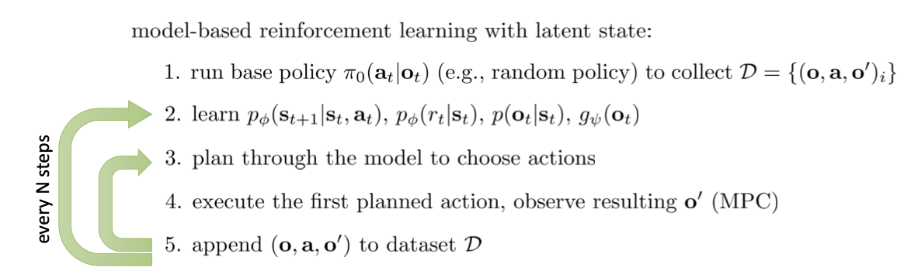
Model-Based Policy Learning
像神经网络这类的策略，使用一个策略对所有状态输入进行动作的选择，我们称之为全局策略； 像 LQR 中我们使用 \(K_{t}s_{t}+k_t\) 对每个状态都有对应的 \(K_t,k_t\) 矩阵的策略，我们称之为本地策略。 显然，全局策略的改动对不同状态的影响更大。
之前学习了如何训练好的环境动力学模型，以及基于模型的强化学习的基本训练方法，这节主要讲如何使用模型来训练策略。 当然可以用我们最熟悉的梯度下降法。
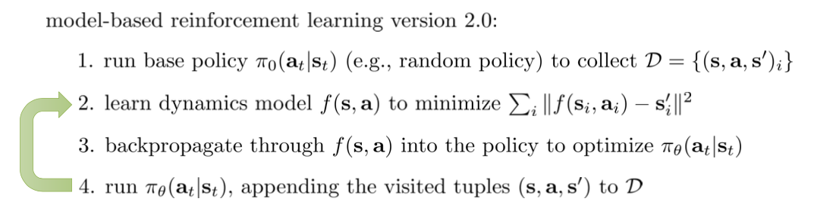
这种方法有什么缺点呢？
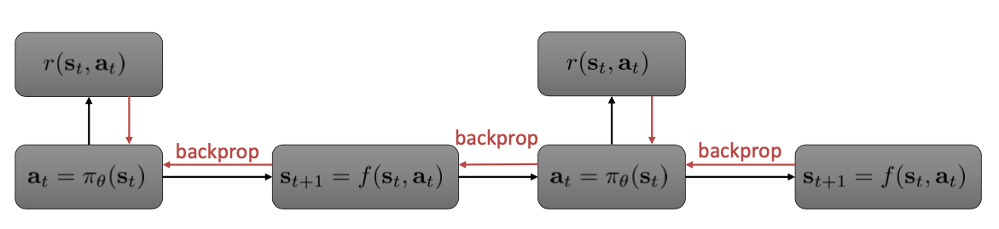
上图是基于模型的方法的反向传播示意图。其中，由于模型是训练到的函数，所以模型函数也会参与到梯度的传播过程中， 就会导致一系列的梯度相乘叠加。 由于梯度在传播过程中叠加性，越靠 Trajectory 结尾，其梯度越小，越靠 Trajectory 开头，梯度越大。 所以很容易发生梯度爆炸的问题。其次就是之前提到的全局策略的缺点，牵一发而动全身，误差会不断累积增大。
这节内容主要介绍两种方法来缓解上诉问题。 一是避免梯度相乘的操作，使用模型生成数据，但利用 Model-Free 的方法来求解。 第二是直接使用非神经网络这样的全局策略，使用简单的本地策略来避免参数敏感性问题。
使用模型的 Model-Free 方法
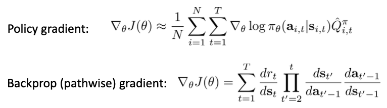
可以看出，免模型的策略梯度方法中，梯度不是相乘而是相加的，因此，如果给定足够多的样本数据，策略梯度是可以收敛的。 但是，直接对模型进行梯度下降的时候，梯度是相乘的，因此很容易发生梯度爆炸。
提出一种 Dyna 算法，它的本质是在线 Q-Learning 算法的一种改进。
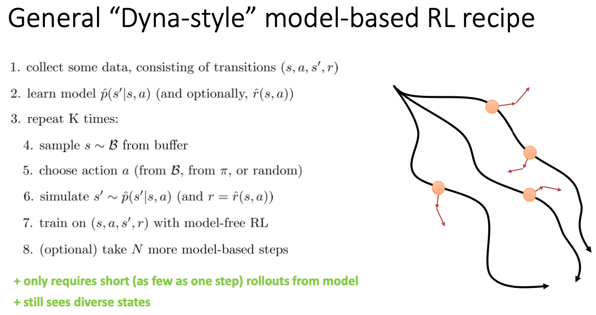
Local Models
之前使用 LQR 解决这个优化问题时，我们假设环境动力学方程是线性，损失函数是二次的， 而现在不知道环境动力学的情况下，如何将 LQR 运用到这个问题中呢？ 之前我们分析过，如果要在已知环境下运用梯度的方法求最优解，需要知道这几个值：
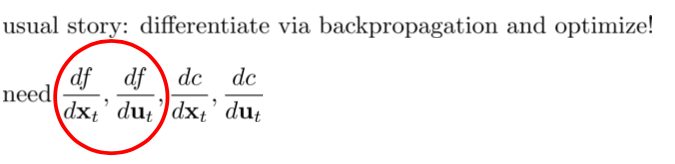
与其利用神经网络去近似环境动力学方程，不如直接去近似 \(\frac{df}{dx_t}\) ， \(\frac{df}{du_t}\) 。
不妨先假设环境动力学方程为： \[ f\left(\mathbf{x}_{t}, \mathbf{u}_{t}\right) \approx \mathbf{A}_{t} \mathbf{x}_{t}+\mathbf{B}_{t} \mathbf{u}_{t} \] 其中： \[ \mathbf{A}_{t}=\frac{d f}{d \mathbf{x}_{t}} \quad \mathbf{B}_{t}=\frac{d f}{d \mathbf{u}_{t}} \] 可以加入随机扰动使得相同的状态下执行相同动作之后的下一个状态稍有不同： \[ p\left(\mathbf{x}_{t+1} \mid \mathbf{x}_{t}, \mathbf{u}_{t}\right)=\mathcal{N}\left(f\left(\mathbf{x}_{t}, \mathbf{u}_{t}\right), \Sigma\right) \] 算法整体流程为：
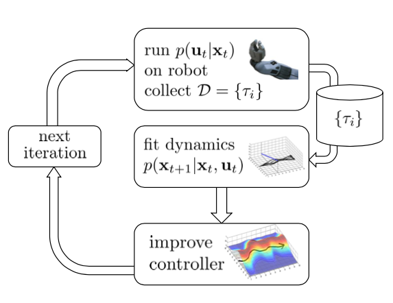
然后，可以直接使用 iLQR 求出来的动作，加上随机扰动。即： \[ p\left(\mathbf{u}_{t} \mid \mathbf{x}_{t}\right)=\mathcal{N}\left(\mathbf{K}_{t}\left(\mathbf{x}_{t}-\hat{\mathbf{x}}_{t}\right)+\mathbf{k}_{t}+\hat{\mathbf{u}}_{t}, \Sigma_{t}\right) \]
上诉的算法都是基于模型是线性的，如果模型不是线性的，那么发生的误差就可能会比较大。例如：
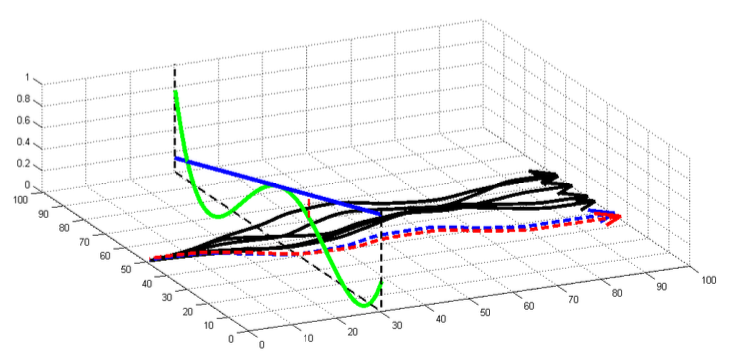
上图中，绿线表示实际的环境动力学，蓝色表示我们近似的假设，此时运行 LQR，有可能会生成和实际环境非常不相符的轨迹。
这个问题在以前的策略梯度中也出现过。TRPO 中，为了使两个策略相差不是很大，使用 KL 散度对两策略进行了限制。 这里也可以采用相同的方法。